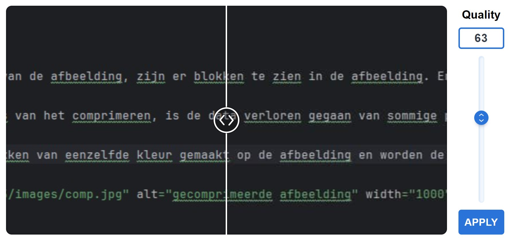

Na het comprimeren van de afbeelding, zijn er blokken te zien in de afbeelding. Er is een scherpe overgang tussen de verschillende blokken.
Door het dataverlies van het comprimeren, is de data verloren gegaan van sommige pixels en deze worden opgevuld met dezelde kleur als een andere dichtbijzijnde pixel.
hierdoor worden blokken van eenzelfde kleur gemaakt op de afbeelding en worden de details op de foto minder duidelijk. Er is duidelijk dataverlies.
Bij de screenshot van Webstorm valt het verlies in kwaliteit minder op, omdat er minder details aanwezig zijn. Er ontstaat een wazige rand rond de tekst.
